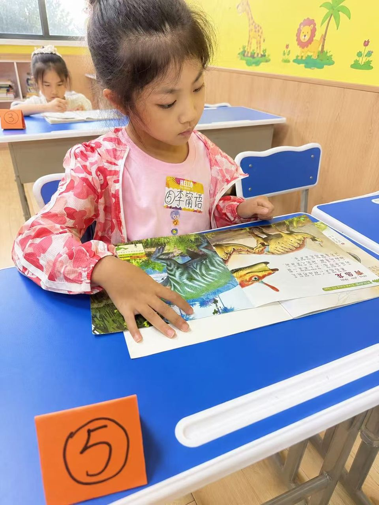

低龄阶段听说优先，兴趣先行
3–6岁重视可理解的语言输入、听和模仿、情境互动，不用大量抄写单词、强制默写和频繁测试替代语言体验。随着年龄和基础变化，逐步加入适合的读写活动。
第一部分 · 基础标准
这些是家长考察课程时可以具体询问、实地观察的方面。
3–6岁重视可理解的语言输入、听和模仿、情境互动，不用大量抄写单词、强制默写和频繁测试替代语言体验。随着年龄和基础变化，逐步加入适合的读写活动。
关注教学语言是否清晰自然、老师是否熟悉儿童语言发展规律及教师流动情况。涉及外籍教师时，可了解 TESOL/TEFL 等培训背景，并核对实际适用的合法任教资格；证书本身不能替代法定资质，不宜只凭“口音”标签判断教学质量。
利用实物、图片、歌曲、故事、角色扮演与情景任务让孩子理解英语的用途，而不是始终对着词汇表认读。
旧知识通过新故事和新主题不断出现，再逐步叠加词汇、句型和表达任务；分级应兼顾年龄、基础与个体差异，而不是忽难忽易。
观察课堂是否给所有孩子提供多样化参与途径，而非老师单向讲解或只有少数活跃孩子抢答。
理解有些孩子先听懂、后愿意开口；允许观察和尝试，不把当众表演或及时回答作为唯一成果。
音频、绘本、动画和亲子小游戏可以延伸课堂，但不应把大量书面作业和高价资源采购转嫁给家庭。
客观看待语言学习节奏，不以“快速考级”“保证进步”“单词量排名”等制造恐慌；目标是能理解、敢交流和持续喜欢英语。
家长可关注课程目标、课堂吸收情况、优势和需要支持之处；真实的过程反馈比单段精心排练的表演视频更有参考价值。
第二部分 · 深入了解
不只看课程表，还要理解日常教学中如何帮助孩子建立长期能力。
尽可能将画面、动作、实物与英文表达直接联系，在孩子能够理解的情境里使用英语；必要时可借助母语支持，但不依赖逐句翻译。
依据儿童水平选择语速、难度、语境与音频形式，区分轻松接触和专注倾听；强调“听得懂一点、再进步一点”的可理解输入（常用 i+1 原则作解释）。
在绘本、节日与生活主题中了解不同文化，也保留对本土生活与语言的尊重，不进行生硬灌输。
通过听指令、角色扮演、故事复述或情景游戏观察听力理解、认读、表达与词汇运用，给家长明确而具体的阶段反馈。
交替使用 TPR 全身反应法、绘本阅读、戏剧互动、主题活动、手工及项目式小任务，降低单一背词问答模式的疲劳。
不在孩子刚开口时频繁打断或批评；先接住意思、鼓励交流，再通过自然示范帮助调整表达。
告诉家长怎样陪听、陪读、提问和选择资源，说明不必随时抽查、强迫默写或制造家庭压力。
通过主题复现、自然重复与阶段性回顾巩固语言经验，而不是一个单元上完就永远不再接触。
关注机构是否定期教研、磨课、开展儿童语言教学培训，是否根据课堂观察更新活动设计，不只是多年使用不变的课件。
真实学习包含探索、沉默、犯错和不同参与速度，不为拍“好看视频”而反复排练。
合理参考听力理解、语言使用与任务完成等表现确定阶段，而不单凭年龄、已缴费课时或续班目标安排升级。
优先提供易获得的绘本、音频与亲子互动建议，避免强制购买大量昂贵教具或占据过多亲子时间。
选校避坑
第三部分 · 两类课程都适用
班级同伴结构、家长开放日、成长档案、卫生与应急管理，同样值得在报名之前问清楚。
课堂实景
绘本共读与情境互动是课堂的日常。以下照片均拍摄于本校区，欢迎预约试听，实地感受课堂氛围。


家长问答
回答基于上述教育理念，具体课程与校区服务请进一步咨询。
可以从听、模仿、绘本、动作和生活场景入手，让孩子先理解语言再逐渐自然输出，不宜用大量默写和刷题替代语言互动。
语言环境的关键是孩子能否理解并积极参与。尽可能用英文配合动作、实物和情景来交流，在必要时给予恰当母语支持，不应单纯追求形式上的百分之百英文。
可观察孩子对指令、故事的理解、参与意愿、尝试表达和逐步发展的阅读能力，不只看单词背诵数量或考级成绩。
通过课堂回放或课堂反馈，说明听力、认读、开口输出和词汇理解的阶段与需要支持之处。家庭任务以音频和亲子互动为主，配套绘本、音频资源免费或低成本，具体以当期安排为准。
校区课程资料
托马斯学习馆王家湾人信汇校区提供的课程、师资分工和日常配套说明。
托马斯学习馆王家湾人信汇校区英语课程资料：POWER UP与瑞格自然拼读、平均8—10人班、情景互动、分级输入和能力反馈。
阅读全文 →英语与家庭人信汇校区英语课堂反馈、游戏化评估、家庭音频与亲子互动说明；观察听力、认读、开口输出和词汇理解，按能力进展判断升班。
阅读全文 →班级与师资校区提供的幼小衔接约10人班、班主任与六名分科教师参与教学、英语8—10人班资料，以及公开教师介绍卡索引。
阅读全文 →招生咨询
适合的课程因孩子年龄、基础与班级安排而异。可联系老师了解当期教学安排、收费及开放参观时间。
武汉市汉阳区龙兴西街人信汇F地块二期7幢1—2层6商号（人信汇二期一号门旁）